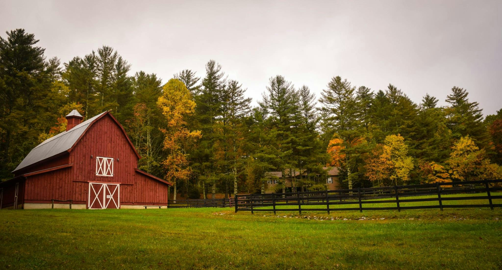

Our Experiences

little-goat
Exotic Breed

Ear Tag
Ear tags are used on goats for easy identification, record-keeping, and compliance with regulatory requirements.

Farm Visits
Come visit our farm and meet the animals...